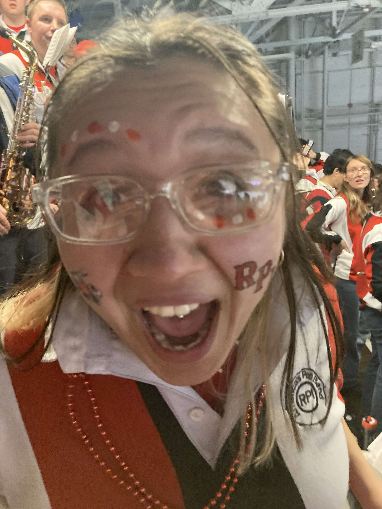

Freakout 2026 (Feb 21)
After a team rebuild this year, it's time to get you caught up.

Here come the starting lineups for Cambridge Community College! Aww even Arthur on the ice is saying hi. Nonetheless it is MAYHEM in the Field House!


RPI is aggressive, but just not with the same passion as last week. Then Stripes gave us a TWO penalties! Some ridiculous calls from these refs; the seeing-eye-chart goes up, and the moose is NOT happy. Gavin the Harvard fan IS having a great time however!


With two penalties Krawchuck is sweating in his net, catching pucks left and right, yet all this hubbub ends with a Harvard goal, and a few minutes after, ANOTHER penalty on our dear Engineers!! It is an UPROAR!! It's crazy because RPI always plays by the rules of the hockey game, so Stripes is always in the wrong. Then they score AGAIN. This can't be happening already. But wait-- Coach Lang is NOT having it, and he challenges it...AND MINUS ONE FOR HARVARD. Still, ref's calls are bs, and the first period ends with RPI-0, Footlocker-1.

At first intermission, fellow conductors play their songs, but Chloe and I have other plans. The one reason we started co-term was to get free pizza and hot chocolate during Freakout from Grad Council, so we exercise our Puckman-given right to enjoy some chow and worm through the crowd as Buttercup continues behind us.

The second intermission begins, and our dear 'Neers of the 'Tute have killed three penalties, and are working hard out there to make something, ANYthing happen. On the band side of things, it's about Tamborine Time, I and guest-star Ungorr get to compose the Tambo section for the second period. With strong goaltending on both ends, an excruciating second period stretched on, SOGs staying even on both teams.

With so many people here and RPI still losing Coach Lang knew he needed to step up his game in this third period. RPI was looking aggressive now, thirsty and BLEEDING RED. Fights break out, then a power play, We are Ready...until GOAAAAAAAAAAAAAAAAAALLL!!!!!!! CHILDREN STAMPEDE!!!!!!!!!!

We are officially cooking with gas. We now have a hockey game on our hands. The minutes pass, and we are soooo back. Suddenly, I guess our wire transfer went through, as Stripes finally starts calling Harvard for all the bs they've been up to all game. We continue the power plays we deserve! But these stripes start calling whistles on everything, and we're trying to score a goal but they call FIVE MINUTE MAJOR on us during our own power play. Once again Eric is NOT having it with these fellas. He calls the refs to the bench, slips them a 20 or something, and they AGAIN REVERSE THEIR CALL!!! Suddenly IT'S 5 ON 3 HOCKEY! Minutes pass, and it gets scarier until there are five minutes left...we are swarming Harvard's net...puck going around, passes to Buckley, Passes To Rainers Rulluers AND SCCOOORREEEE!!! HOCKEYYYYYYYYYY! AND WE HAVE A CERTIFIED SIEVE ON OUR HANDS!!

It's only a matter of time before they pull their sieve, and emotionally might not be able to take this. And with two minutes left, they do the thinkable and away he goes. With 6 on 5, it all comes down to these minutes. It's times like these when you wonder which universe you end up in, and hope everything that happens was not for a loss, the whole day behind you was in preparation for this. So many people here at the cusp of feeling a special pride in their institution for one weekend. Please Red lock in. And they do. OUR BOY DOVAR TINLING WITH THE EMPTY NETTER!!! FATE IT SEALED!!! HIGH FIVE, WOOOOO!!!


The SAFETY SCHOOL chants come out, and with that, the Engineers have done the unthinkable, and embrassed Harvard's precious wittle feelings. One of the greatest RPI hockey games in recent memory. FREAKOUT 2026 is ours!

And Harvard still refuses to post the final score on Instagram.

BACK